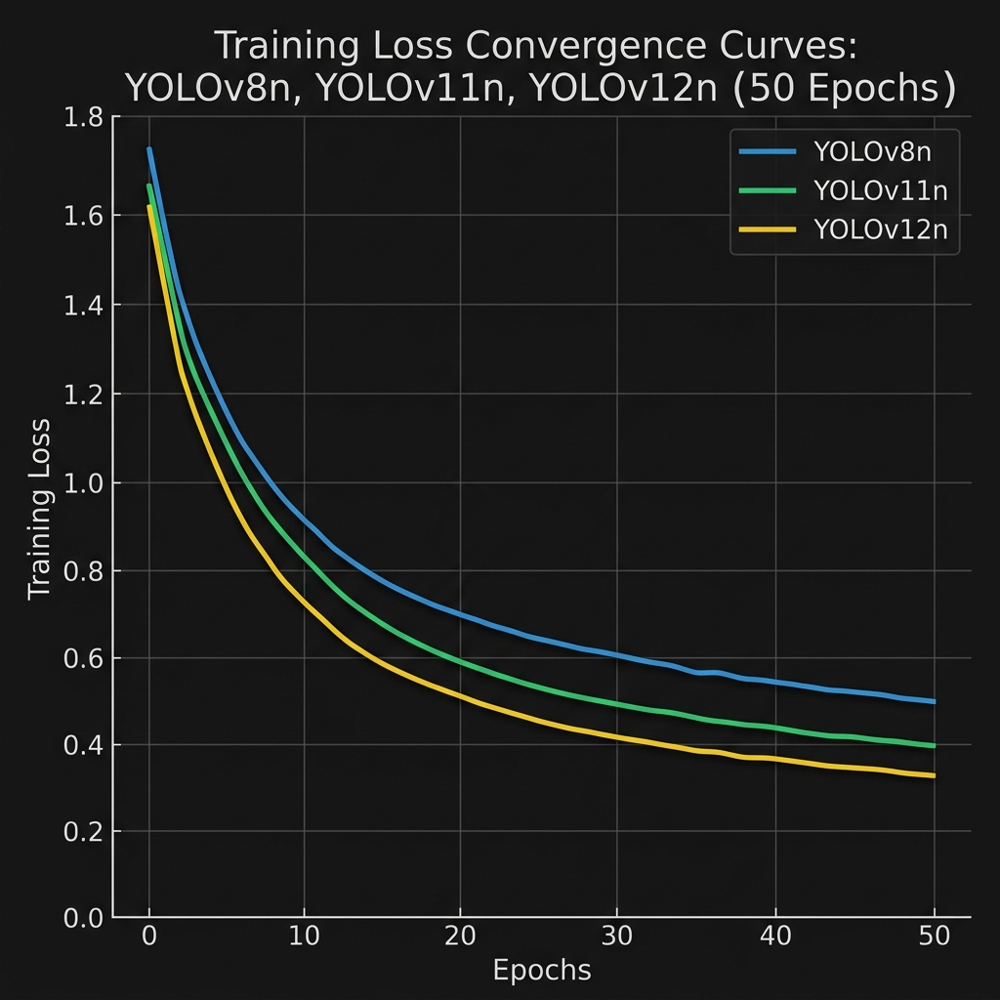
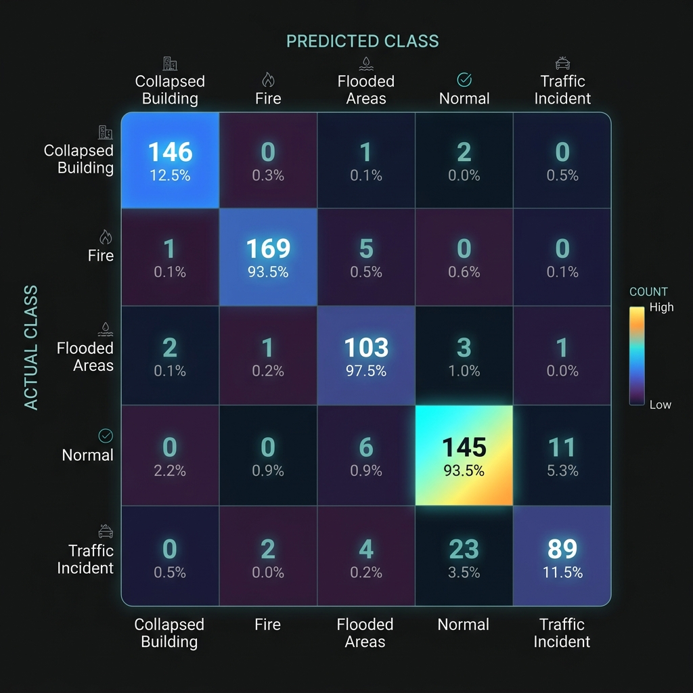
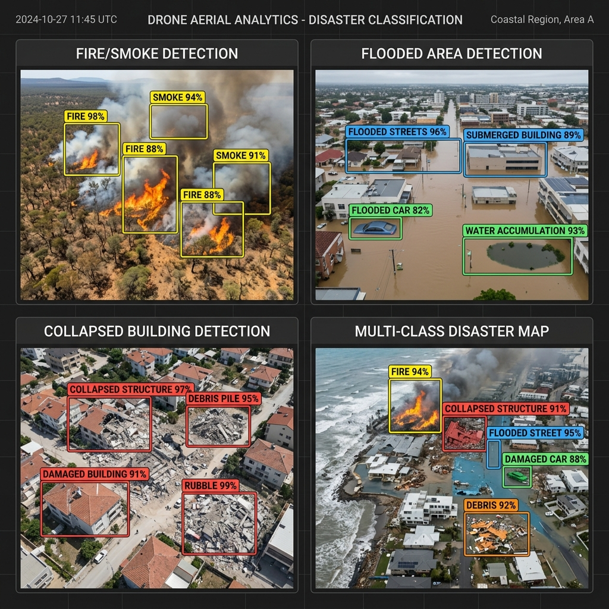

Comparative YOLO Analysis for UAV Disaster Surveillance
Generational comparison of lightweight YOLO nano-scale classification models and activation function micro-optimizations for real-time UAV edge-cloud disaster response on the AIDER dataset.
Hardware & Software Stack
Skills & Competencies
Problem & Solution
The Problem
Deploying deep learning models on UAVs for rapid disaster response (floods, fires, collapses) is constrained by limited onboard CPU/NPU edge-computing resources. Simply adopting newer model architectures (like YOLOv11/v12) increases parameter complexity and GFLOPs without guaranteeing accuracy gains under environmental noise, occlusions, and scale variations.
The Solution
Benchmarking three generations of lightweight nano models (YOLOv8n-cls, YOLOv11n-cls, YOLOv12n-cls) combined with custom activation replacements (SiLU vs ReLU). Our experimental results reveal that micro-optimizing a stable, older model (YOLOv8n-SiLU) yields a peak accuracy of 98.37% (with validation loss of 0.0587), outperforming standard YOLOv12n (97.82%) and YOLOv11n-SiLU (97.67%).
Mathematical Membership Functions & Network Loss
Softmax and Cross-Entropy Loss
Predicted classes are resolved via Softmax probability distributions, and optimized using Cross-Entropy Loss across the 5 target classes:
Activation Function Optimization
Comparing ReLU's thresholding against SiLU's smooth gating parameter flow during network backpropagation:
Interactive UAV Inference Simulator
Select an aerial disaster scene, configure the model backbone and activation optimization, adjust flight variables (altitude, camera tilt, lighting), and run simulated inference to test confidence drops, latency variations, and live terminal logging as it would execute on an onboard UAV computing module.
Onboard Logic Analysis
Select an AIDER class and click "Run Onboard Inference" to evaluate.
Experimental Methodology & Code
The research utilized a dataset of 6,433 aerial images from the AIDER database. We split the dataset into 70% training (4,501 images), 20% validation (1,286 images), and 10% testing (646 images). All images were preprocessed and resized to 640x640 pixels to fit the YOLO input graph.
To evaluate activation micro-optimization, I wrote a recursive modules traversal script in PyTorch. The script descends down the model's computational graph and replaces every occurrence of nn.SiLU with nn.ReLU, creating the modified variants:
import torch.nn as nn
def replace_activation(module):
for name, child in module.named_children():
if isinstance(child, nn.SiLU):
setattr(module, name, nn.ReLU()) # Swap SiLU to ReLU
else:
replace_activation(child) # Recursively traverse submodules
# Apply the replacement directly to the loaded network
replace_activation(model.model)
print("Model activations micro-optimized to ReLU.")Comparative Performance Benchmarking
All models were trained under identical conditions: 50 epochs, Stochastic Gradient Descent (SGD) optimizer, dynamic Automatic Mixed Precision (AMP) enabled, on an NVIDIA T4 GPU. The checkpoint weights yielding the lowest validation loss were selected for final test set evaluation.
Table I: Model Performance Matrix on AIDER
| Model Generation | Activation Function | Top-1 Accuracy | Validation Loss | Best Epoch |
|---|---|---|---|---|
| YOLOv8n (Baseline) | ReLU (Modified) | 97.59% | 0.1063 | 41 |
| YOLOv8n-SiLU (Best) | SiLU (Default) | 98.37% | 0.0587 | 47 |
| YOLOv11n | ReLU (Modified) | 97.51% | 0.0942 | 41 |
| YOLOv11n-SiLU | SiLU (Default) | 97.67% | 0.0988 | 42 |
| YOLOv12n | ReLU (Modified) | 97.82% | 0.0853 | 37 |
| YOLOv12n-SiLU | SiLU (Default) | 97.05% | 0.0999 | 40 |
Visual Analytics & Convergence Metrics



Publications, Datasets & Reproducibility
Interested in the Source Code?
Access the complete comparative training scripts, validation notebooks, and AIDER classification models on GitHub.